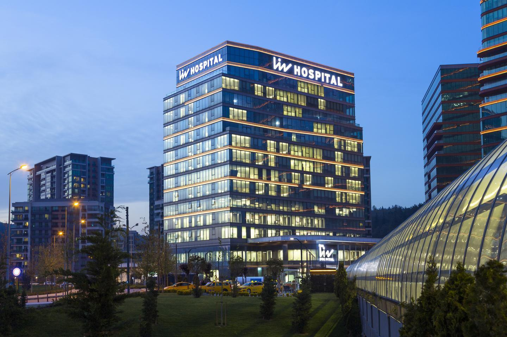
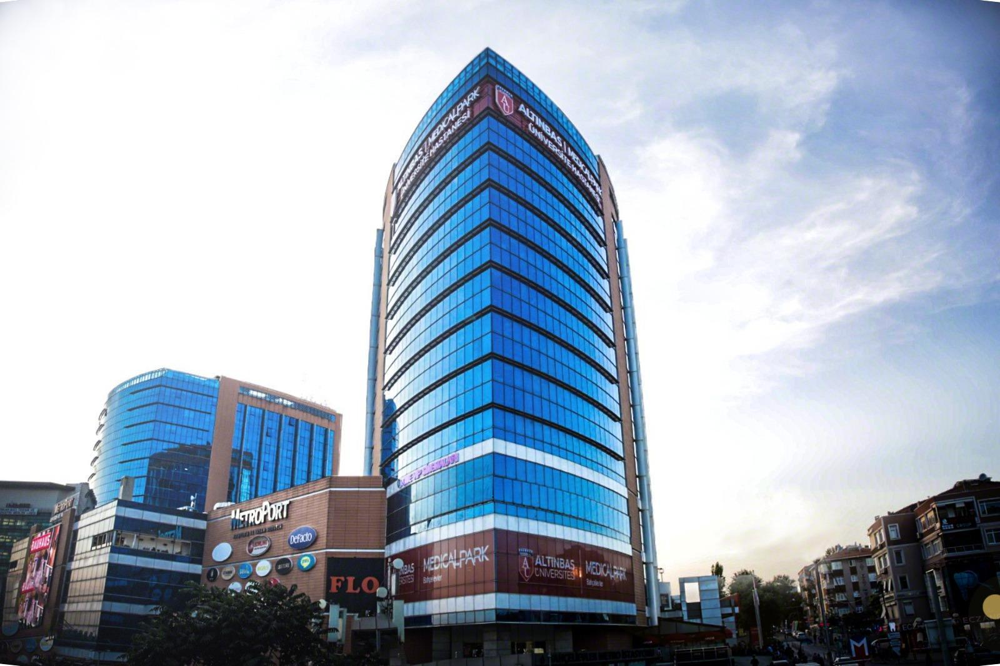
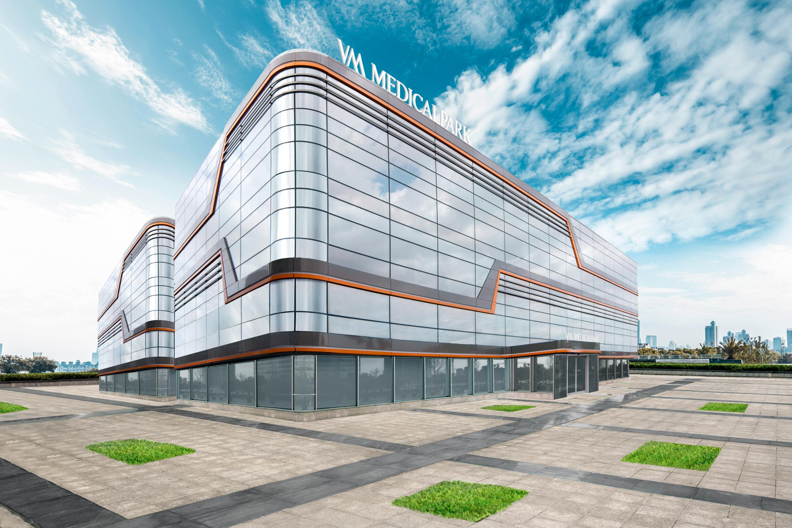
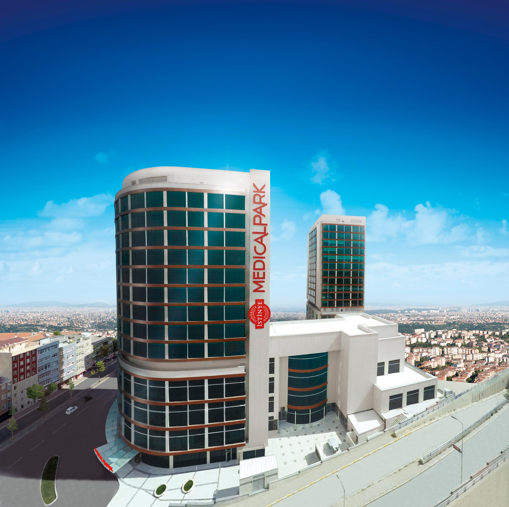
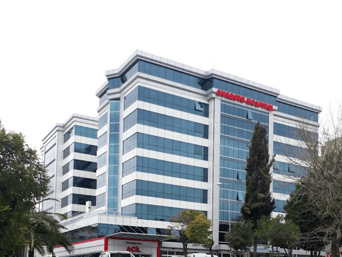
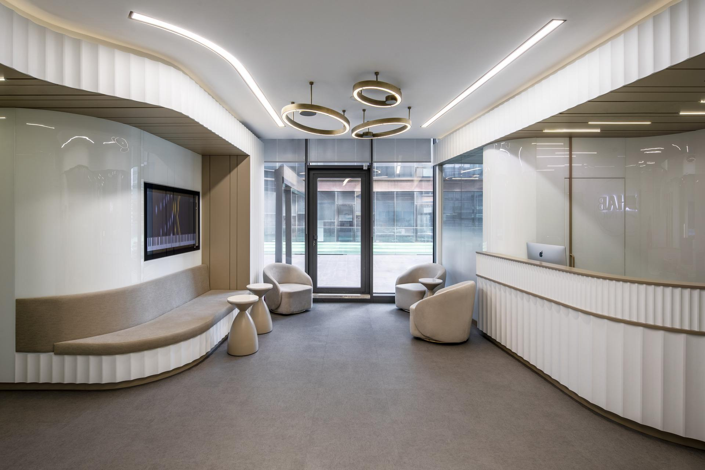
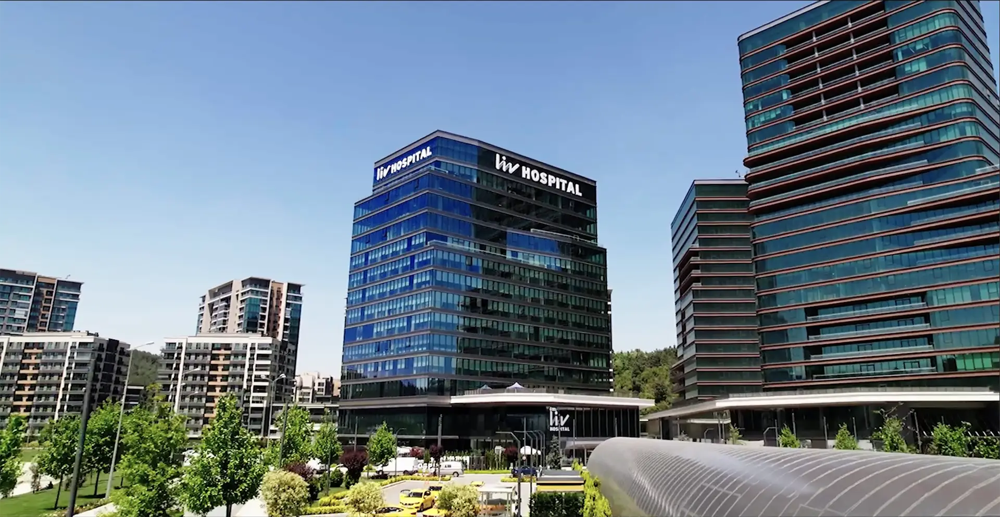
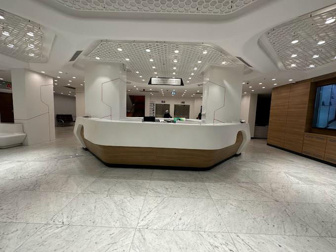
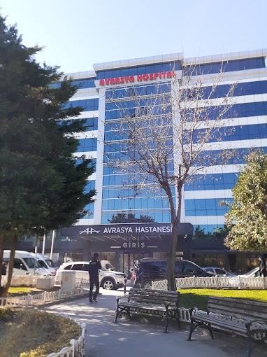
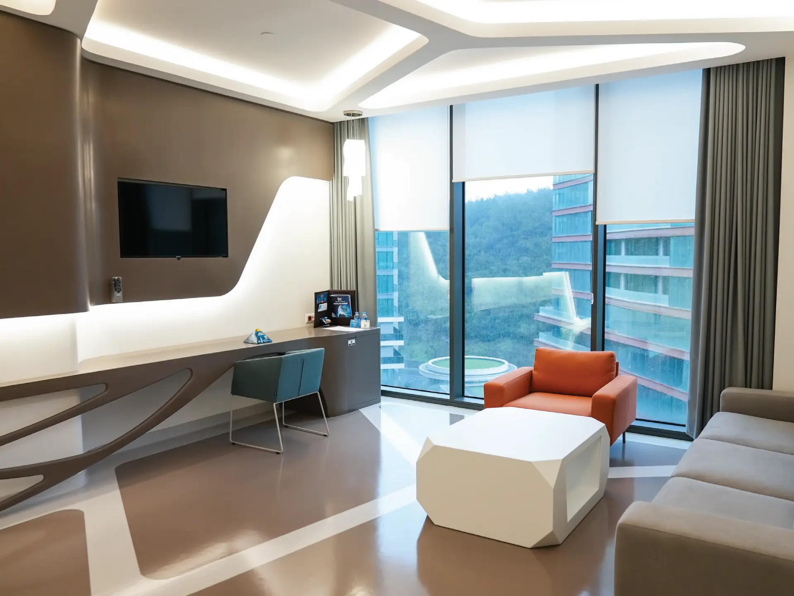

Colaborăm cu cele mai prestigioase lanțuri de spitale din Turcia, garantând pacienților acces la servicii medicale de top. Oferim nu doar tratamente, ci și o șansă la o viață mai bună prin expertiza medicilor de renume internațional, dotări tehnologice revoluționare și standarde de îngrijire de neegalat.

Central Hospital este unul dintre cele mai apreciate lanțuri private de sănătate din Istanbul, cu o prezență solidă și recunoscut internațional pentru standardele sale medicale ridicate. Cu o rețea de 3 spitale moderne amplasate strategic pe ambele maluri ale Istanbulului, grupul combină experiența unei echipe de 116 medici specialiști cu o infrastructură medicală de ultimă generație.
Central Hospital Etiler, Ataşehir și Kozyatağı se remarcă prin 201 paturi, 15 săli de operație și o rată de satisfacție a pacienților de 91%. Spitalele oferă servicii complete în ortopedie și chirurgia coloanei vertebrale, chirurgie bariatrică (Sleeve Gastrectomy, Bypass Gastric), chirurgie plastică și estetică, neurochirurgie și cardiologie. Anual, peste 10.000 de pacienți internaționali din 115 țări aleg Central Hospital pentru tratamentele lor.

Medicana Health Group este unul dintre cele mai mari lanțuri private de sănătate din Turcia, fondat în 1992 și recunoscut internațional pentru standardele sale medicale ridicate. Cu o rețea de 18 spitale moderne, peste 30 de specialități medicale și unități internaționale în Europa, grupul combină experiența de peste 30 de ani cu o infrastructură medicală de ultimă generație.
Medicana Ataköy Hospital, situată pe partea europeană a Istanbulului, se remarcă prin peste 200 de paturi, 30+ specialități și tehnologii avansate precum chirurgia robotică da Vinci, tratamente oncologice moderne (imunoterapie, terapii țintite) și tehnici minim invazive.

Spitalul Liv din Istanbul este recunoscut pentru abordarea sa modernă și centrată pe pacient, combinând tehnologii avansate cu un personal medical experimentat și dedicat. Cu o capacitate de 154 de paturi, 8 săli de operație și 50 de departamente, spitalul ocupă un spațiu de 30.000 m² și este acreditat de Comisia Internațională Mixtă și de TÜV pentru calitatea serviciilor medicale.
Spitalul Liv se distinge prin sisteme de chirurgie robotică precum daVinci și MAKOplasty pentru intervenții ortopedice, tehnologii avansate în tratamentul cancerului, cum ar fi radioterapia „TrueBeam”, și proceduri inovatoare de medicină regenerativă și celule stem. Are, de asemenea, un centru dedicat pentru brahiterapie, recunoscut internațional.

Medical Park Bahçelievler Hospital este unul dintre cele mai moderne spitale private din Istanbul, oferind servicii medicale de top atât pacienților locali, cât și celor internaționali. Situat strategic în districtul Bahçelievler, pe partea europeană a orașului, spitalul este ușor accesibil și se află în apropierea aeroporturilor internaționale.
Spitalul se întinde pe 19 etaje, având o suprafață impresionantă de 33.000 m², și oferă 242 de paturi, 89 de cabinete de consultații și 10 săli moderne de operație. Camerele destinate internării sunt amenajate la standarde hoteliere de 5 stele, asigurând un mediu sigur și primitor pentru fiecare pacient.

VM Medical Park Florya este un spital universitar modern din Istanbul, parte a rețelei Medical Park Hospitals Group. A fost inaugurat în 2017 și este cunoscut pentru combinația dintre tehnologie medicală avansată, confort hotelier și servicii personalizate pentru pacienți internaționali. Are o suprafață de aproximativ 51.000 m², cu 300 de paturi și 13 săli de operații.
Printre specialitățile principale se numără cardiologia, chirurgia cardiovasculară, oncologia, ortopedia, neurochirurgia, chirurgia plastică, ginecologia și pediatria. Pacienții internaționali beneficiază de sprijin complet: traducători în mai multe limbi, transfer de la aeroport, asistență medicală continuă și camere confortabile.

Medical Park Gaziosmanpaşa este un spital modern din Istanbul, parte a rețelei Medical Park și afiliat Universității İstinye. Deschis în 2015 și devenit spital universitar în 2018, oferă servicii medicale integrate la standarde internaționale. Dispune de aproximativ 67.000 m², 197 de paturi, 15 săli de operații și unități de terapie intensivă moderne. Este acreditat JCI.
Spitalul acoperă specialități variate, de la cardiologie, neurochirurgie și oncologie, până la ortopedie, chirurgie plastică și medicină regenerativă. Colaborarea cu Universitatea İstinye îi permite să combine tratamentul clinic cu cercetarea medicală avansată.

Avrasya Hospital International, situat în inima Istanbulului, este un centru medical de excelență recunoscut pe plan internațional pentru servicii medicale de înaltă calitate și tehnologie de ultimă generație. Cu o echipă de medici specializați în diverse domenii, spitalul oferă soluții complete pentru tratamente complexe, inclusiv intervenții chirurgicale avansate, oncologie, cardiologie și ortopedie.
Dedicat îngrijirii personalizate și siguranței pacienților, Avrasya Hospital pune la dispoziție facilități moderne, standarde medicale internaționale și un mediu confortabil, asigurând o recuperare rapidă și eficientă.

Emine Clinic este una dintre cele mai apreciate clinici din Istanbul, specializată în transplantul de păr, tratamente împotriva căderii părului și soluții personalizate de restaurare capilară. Fondată de binecunoscuta specialistă Dr. Emine Erdem, clinica oferă tratamente de ultimă generație, combinând tehnologia avansată cu o abordare medicală empatică și profesionistă.
Cu peste 10 ani de experiență în domeniul restaurării părului, Dr. Emine Erdem este recunoscută internațional pentru profesionalismul și dedicarea cu care abordează fiecare caz. Implicarea sa directă în fiecare etapă a tratamentului garantează un standard ridicat al serviciilor oferite.

HAB Dental Clinic din Vadistanbul este o clinică modernă de stomatologie, înființată în 2022 de Ayşe Bige Başaran și Halit Başaran. Clinica se bucură de un nivel înalt de expertiză, având o experiență de 20 de ani în domeniu și folosind tehnologii de ultimă oră pentru a oferi servicii rapide și confortabile.
Printre tratamentele oferite se numără implanturile dentare, designul zâmbetului Hollywood, coroanele Emax și soluții de implant All on 4. Clinica aplică tehnici de digital dentistry, inclusiv sisteme CAD-CAM pentru restaurări dentare rapide și estetice.
Descoperă una dintre cele mai mari rețele de spitale private din Turcia, partenerul nostru principal.







Parteneriatele noastre sunt mai mult decât simple acorduri comerciale; ele sunt construite pe fundația încrederii reciproce și a angajamentului comun de a aduce îngrijire de cea mai înaltă calitate pacienților noștri. Descoperiți cu încredere partenerii noștri și experimentați excelența în sănătate la nivel mondial.
Apasă pe o fotografie pentru a o deschide pe tot ecranul.
6 fotografii
Contactează-ne direct sau completează formularul online pentru a explora cele mai bune opțiuni medicale internaționale, personalizate pentru tine.